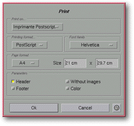

<!-- Documentation XMayday (c)1996-2000 AXENE contact axene@axene.org>
<html>

<head>
<title>Print</title>
</head>

<body BGCOLOR="#FFFFFF" BACKGROUND="Images/back.gif" TEXT="#000000">

<p ALIGN="right">  </p>

<p><br>
<br>
The <i>&quot;Print&quot;</i> dialog box allows the user to choose from various printing
parameters. <br>
<br>
</p>

<hr>

<p align="center"><br>
 <br>
<small><i>Screen shot: Print dialog box. </i></small></p>

<p><br>
</p>

<hr>

<p><br>
</p>

<h3>Upper portion of the dialog box:</h3>

<ul>
  <li><a NAME="printer_list">The <i>&quot;Print to...&quot;</i> pulldown list <b>selects a
    printer</b> to print the HTML page. It chooses from those defined in the </a><a HREF="ConfigPrinter.html">configuration files</a>; the list contains an option called <i>&quot;File&quot;</i>,
    which, if selected, prints to a file chosen from the '<a HREF="Box_File_Selectors.html#fs_print_in_file">Print to a file...</a>' file selector. <br>
    &nbsp;</li>
  <li><a NAME="section_print_format">The <i>&quot;Print format&quot;</i> section <b>selects
    the printout format</b>. The available formats are the following:</a> <br>
    &nbsp; <ul>
      <li><i>&quot;Plain text&quot;</i> is a <b>rough draft</b> printout. <br>
        &nbsp;</li>
      <li><i>&quot;Formatted text&quot;</i> is a final version printout (complete with text
        styles, bullets...). <br>
        &nbsp;</li>
      <li><i>&quot;PostScript&quot;</i> is a printout in <b>PostScript</b>® language. <br>
        &nbsp;</li>
    </ul>
  </li>
  <li><a NAME="section_font_family">The <i>&quot;Font Family&quot;</i> sectgion permet de <b>choisir
    la famille de polices</b> section chooses the font family to be used for a PostScript
    printing. This section is grey if the print format chosen is not <i>&quot;PostScript&quot;</i>.
    </a><br>
    &nbsp;</li>
  <li><a NAME="section_page_format">The <i>&quot;Page Format&quot;</i> section <b>chooses the
    page dimensions</b> to be printed. This section is grey if the print format chosen is not <i>&quot;PostScript&quot;</i>.
    It contains, from left to right: </a><br>
    &nbsp;<ul>
      <li><a NAME="page_format_list">a pulldown list showing standard <b>page formats</b>. When
        the page dimensions are changed manually, <i>&quot;other&quot;</i> is the item selected
        from the list. </a><br>
        &nbsp;</li>
      <li><a NAME="page_width_textfield">a text field to specify the <b>page width</b>. This value
        is expressed in centimeters and must be set between 1 and 300 centimeters. </a><br>
        &nbsp;</li>
      <li><a NAME="page_height_textfield">a text field to specify the <b>page height</b>. This
        value is expressed in centimeters and must be set between 1 and 300 centimeters. </a><br>
        &nbsp;</li>
    </ul>
  </li>
  <li><a NAME="section_parameters">The <i>&quot;Parameters&quot;</i> section <b>activates/deactivates
    the parameters for PostScript printing</b>. This section is grey if the print format
    chosen is not <i>&quot;PostScript&quot;</i>. It is composed from top to bottom and left to
    right by: </a><br>
    &nbsp;<ul>
      <li><a NAME="headers_button">The <i>&quot;Header&quot;</i> button allows the user to <b>include
        the headers and footers</b> when printing. The header contains the HTML page title on the
        left and the page number on the right. The footer contains the filename on the left and
        the time and date on the right. </a><br>
        &nbsp;</li>
      <li><a NAME="footnotes_button">The <i>&quot;Footer&quot;</i> button <b>includes footnotes</b>
        when printing. Activating this button creates footnotes for all of the hypertext links on
        a page and lists the names of the corresponding files at the bottom of the page. </a><br>
        &nbsp;</li>
      <li><a NAME="without_image_button">The <i>&quot;Without images&quot;</i> button <b>suppresses
        graphics</b> when printing. If this button is activated the images are replaced by
        rectangles of corresponding size. Printing the graphics renders the data much larger and
        the printing time longer; printing without graphics quickly prints a draft of an HTML
        page. </a><br>
        &nbsp;</li>
      <li><a NAME="color_button">The <i>&quot;Color&quot;</i> button <b>prints graphics in color</b>.
        Graphics printing is done in greytones by default, because the data's size in color is
        much larger than in greytones. </a><br>
        &nbsp;<br>
        &nbsp;</li>
    </ul>
  </li>
</ul>

<h3>Lower portion of the dialog box:</h3>

<ul>
  <li><a NAME="button_ok"><i>&quot;Ok&quot;</i> <b>launches the printing of the browser page</b>
    and closes the box. If <i>&quot;file&quot;</i> is the printer chosen, the '</a><a HREF="Box_File_Selectors.html#fs_print_in_file">Print to a file</a>' file selector will
    open. <br>
    &nbsp;</li>
  <li><a NAME="button_cancel"><i>&quot;Cancel&quot;</i> <b>abandons the printing</b> and
    closes the box. </a></li>
</ul>

<p><br>
</p>

<hr>

<p ALIGN="right"></p>
</body>
</html>
